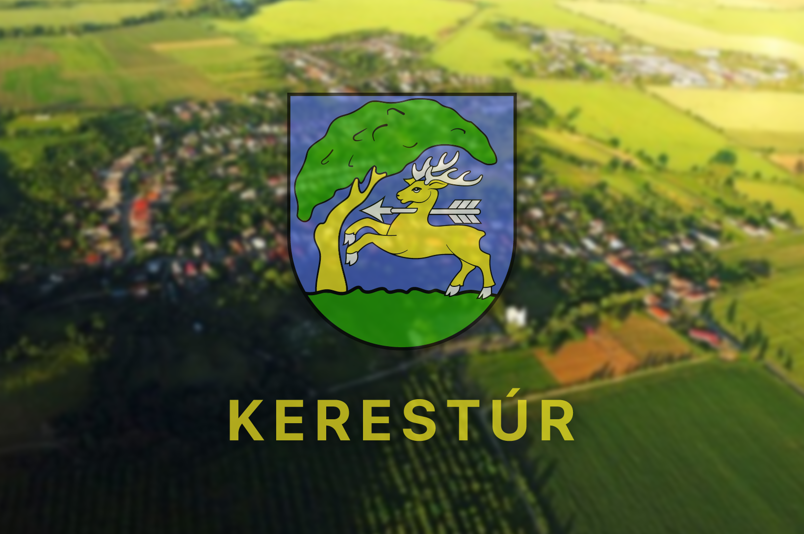

Obec Zemplínska Teplica sa nachádza v Košickom kraji, približne 20km západne od okresného mesta Trebišov. V minulosti tu pôsobil futbalový klub FK Zemplínska Teplica. Momentálne sa ako Futsalový tím snažíme zviditeľniť vo futsale a v malom futbale. K tomu nám pomáha aj naša obec spolu s Detskou organizáciou Fénix, vďaka ktorým máme zabezpečenú materiálnu podporu pre našu činnosť.

Detskej Organizácii Fénix ďakujeme za popdporu a sprostredkovanie financii, vďaka ktorým môžeme vykonávať svoju činnosť a dôstojne reprezentovať našu obec v športoch futsalu a malého futbalu.